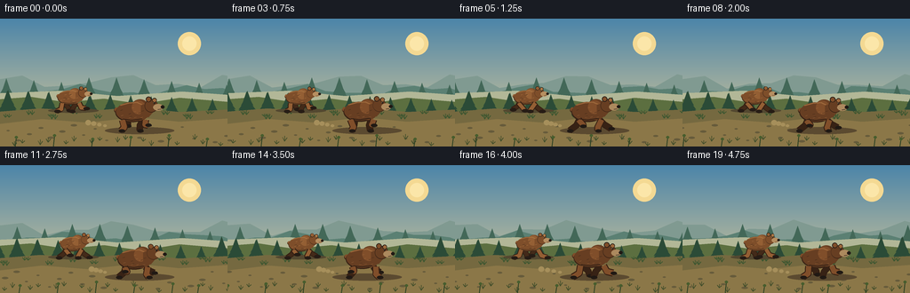
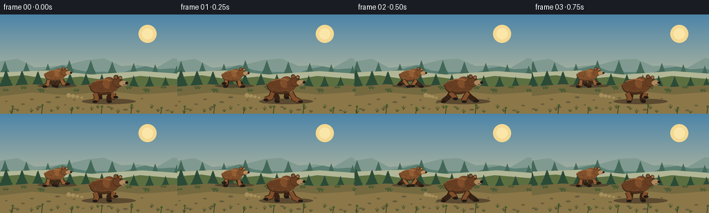
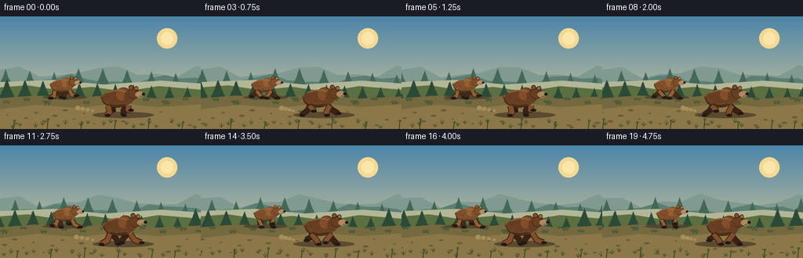
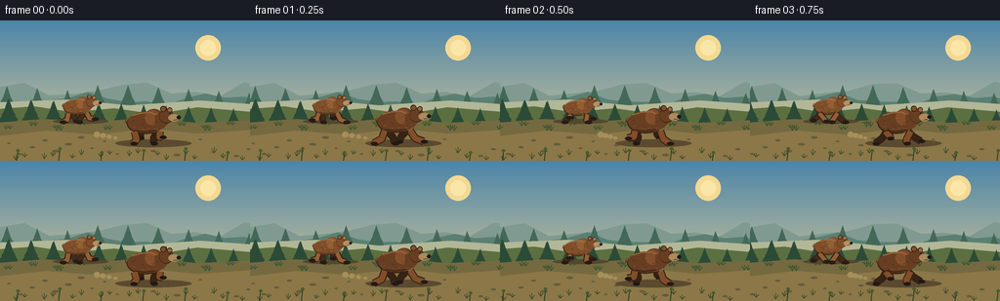

CODING AGENTS AS PIXEL WORLD MODELS
traex/GPT-5.6-Sol · instance_preservation_0013
点击播放 · 原生 RGB 像素
逐轮保存的候选
回放视频、检查图与代码变化。
每份候选均可单独播放。实际图片检查记录在下方工具轨迹中。
候选 01播放与检查图
点击播放 · 原生 RGB 像素


展开代码变化
--- 上一保存版本
+++ 本次保存版本
@@ -0,0 +1,254 @@
+from pathlib import Path
+import math
+import numpy as np
+from PIL import Image, ImageDraw, ImageFilter
+
+import artifact_io
+
+
+W, H, N = 256, 144, 20
+S = 4 # supersampling for clean, illustrated edges
+TAU = math.pi * 2
+ROOT = Path(__file__).resolve().parent
+
+
+def sc(v):
+ return int(round(v * S))
+
+
+def pts(seq):
+ return [(sc(x), sc(y)) for x, y in seq]
+
+
+def ellipse(d, box, fill, outline=None, width=1):
+ d.ellipse(tuple(sc(v) for v in box), fill=fill, outline=outline, width=sc(width) if outline else 1)
+
+
+def line(d, xy, fill, width):
+ d.line(pts(xy), fill=fill, width=sc(width), joint="curve")
+
+
+def polygon(d, xy, fill):
+ d.polygon(pts(xy), fill=fill)
+
+
+def color_lerp(a, b, q):
+ return tuple(int(a[i] * (1-q) + b[i] * q) for i in range(3))
+
+
+def mountain_layer(d, offset, base_y, amp, color, step=22):
+ # A deterministic scrolling ridgeline.
+ start = -50
+ ridge = []
+ for x in range(start, 310, step):
+ world = x + offset
+ y = base_y - amp * (0.45 + 0.3 * math.sin(world * .047) +
+ 0.18 * math.sin(world * .113 + 1.1))
+ ridge.append((x, y))
+ polygon(d, ridge + [(310, 115), (-50, 115)], color)
+
+
+def pine(d, x, y, size, color, mist=False):
+ trunk = color_lerp(color, (35, 31, 24), .38)
+ d.rectangle((sc(x-size*.055), sc(y-size*.08), sc(x+size*.055), sc(y+2)), fill=trunk)
+ alpha = color
+ for k, frac in enumerate((.29, .48, .67, .85)):
+ yy = y - size + size * frac
+ half = size * (.18 + .11*k)
+ polygon(d, [(x, yy-size*.28), (x-half, yy+size*.25),
+ (x-half*.43, yy+size*.20), (x-half*.92, yy+size*.33),
+ (x+half*.92, yy+size*.33), (x+half*.43, yy+size*.20),
+ (x+half, yy+size*.25)], alpha)
+
+
+def grass_tuft(d, x, y, c, h=5):
+ line(d, [(x, y), (x-2.3, y-h*.75)], c, .65)
+ line(d, [(x, y), (x+.2, y-h)], c, .65)
+ line(d, [(x, y), (x+2.8, y-h*.65)], c, .65)
+
+
+def limb(d, attach, foot, knee_bias, color, width, paw_color, near=True):
+ ax, ay = attach
+ fx, fy = foot
+ kx = ax + (fx-ax)*.52 + knee_bias
+ ky = ay + (fy-ay)*.48 + (2.0 if near else 0)
+ # A soft dark contour and a rounded muscular limb.
+ line(d, [(ax, ay), (kx, ky), (fx, fy-1)], (53, 31, 18), width+2.0)
+ line(d, [(ax, ay), (kx, ky), (fx, fy-1)], color, width)
+ ellipse(d, (kx-width*.48, ky-width*.45, kx+width*.48, ky+width*.48), color)
+ # elongated paw points along the run direction
+ ellipse(d, (fx-2.8, fy-2.6, fx+4.4, fy+1.2), paw_color)
+ line(d, [(fx+1.0, fy+.25), (fx+4.2, fy+.2)], (39, 29, 21), .65)
+
+
+def bear(d, x, ground, scale, phase, palette, seed, front=True):
+ """Side-on running bear. x is body center; all features remain instance-stable."""
+ rng = np.random.default_rng(seed)
+ dark, body, mid, light, muzzle, ink = palette
+ bob = scale * (1.15 * math.sin(phase*2 + .35) - .55 * max(0, math.cos(phase)))
+ airborne = scale * 1.9 * max(0, math.sin(phase*2 - .25))
+ cy = ground - scale*20 + bob - airborne
+ hipx, shoulderx = x-scale*12.7, x+scale*11.3
+ attach_y = cy + scale*8.2
+
+ # Running-cycle foot placement. Back-side pair is phase shifted and darker.
+ def foot(which, p, far=False):
+ sw = math.sin(p)
+ lift = max(0, math.cos(p)) * scale * 6.0
+ if which == "front":
+ ax = shoulderx + (scale*1.5 if not far else -scale*1.2)
+ fx = ax + scale*(11.0*sw + 2.5)
+ else:
+ ax = hipx + (scale*1.0 if not far else scale*2.2)
+ fx = ax + scale*(10.0*sw - 1.2)
+ return ax, fx, ground-lift
+
+ # far legs, visible below the body
+ for which, p in (("hind", phase+math.pi*.18), ("front", phase+math.pi*1.18)):
+ ax, fx, fy = foot(which, p, True)
+ limb(d, (ax, attach_y-scale*.6), (fx, fy),
+ scale*(2.4 if which == "hind" else -1.5), dark,
+ scale*5.2, ink, near=False)
+
+ # tail behind rump
+ ellipse(d, (x-scale*20.5, cy-scale*4.8, x-scale*15.8, cy+scale*.2), dark)
+ ellipse(d, (x-scale*20.1, cy-scale*5.2, x-scale*16.1, cy-scale*.6), mid)
+
+ # body mass: rump, long torso, and characteristic shoulder hump
+ ellipse(d, (x-scale*19, cy-scale*10.3, x+scale*16, cy+scale*10.3), dark)
+ ellipse(d, (x-scale*18.3, cy-scale*10.9, x+scale*14.8, cy+scale*9.0), body)
+ ellipse(d, (x-scale*3.5, cy-scale*14.0, x+scale*17.7, cy+scale*8.4), body)
+ ellipse(d, (x-scale*1.6, cy-scale*12.8, x+scale*12.8, cy+scale*1.8), mid)
+ # back highlight follows the form
+ line(d, [(x-scale*14, cy-scale*7.6), (x-scale*5, cy-scale*10.0),
+ (x+scale*4, cy-scale*10.7), (x+scale*10, cy-scale*8.0)], light, scale*1.15)
+
+ # neck and head project distinctly to the right
+ polygon(d, [(x+scale*8, cy-scale*8), (x+scale*19, cy-scale*11),
+ (x+scale*23, cy-scale*3), (x+scale*16, cy+scale*5),
+ (x+scale*8, cy+scale*3)], body)
+ ellipse(d, (x+scale*12.0, cy-scale*14.0, x+scale*26.0, cy-scale*.2), dark)
+ ellipse(d, (x+scale*12.4, cy-scale*13.4, x+scale*25.5, cy-scale*.8), body)
+ # two round ears, the forward one brighter
+ ellipse(d, (x+scale*13.3, cy-scale*16.8, x+scale*19.0, cy-scale*11.2), ink)
+ ellipse(d, (x+scale*14.0, cy-scale*16.2, x+scale*18.4, cy-scale*11.8), mid)
+ ellipse(d, (x+scale*20.0, cy-scale*15.4, x+scale*24.7, cy-scale*10.8), ink)
+ ellipse(d, (x+scale*20.6, cy-scale*14.8, x+scale*24.2, cy-scale*11.2), light)
+ # muzzle, nose and eye
+ ellipse(d, (x+scale*21.0, cy-scale*9.2, x+scale*31.8, cy-scale*2.0), muzzle)
+ ellipse(d, (x+scale*29.1, cy-scale*7.6, x+scale*33.0, cy-scale*4.2), ink)
+ ellipse(d, (x+scale*21.3, cy-scale*10.8, x+scale*23.1, cy-scale*9.0), ink)
+ ellipse(d, (x+scale*21.55, cy-scale*10.52, x+scale*22.05, cy-scale*10.02), (244, 218, 158))
+ line(d, [(x+scale*29.4, cy-scale*3.6), (x+scale*26.0, cy-scale*3.1)], ink, scale*.65)
+
+ # sparse, fixed fur marks emphasize identity and direction without flicker
+ for _ in range(13):
+ rx = rng.uniform(-13, 12)
+ ry = rng.uniform(-6.5, 6.0)
+ if (rx/17)**2 + (ry/9)**2 < .9:
+ col = light if rng.random() < .52 else dark
+ line(d, [(x+scale*rx, cy+scale*ry),
+ (x+scale*(rx-2.1), cy+scale*(ry+.6))], col, max(.42, scale*.45))
+
+ # near legs are laid over the torso edge
+ for which, p in (("hind", phase+math.pi), ("front", phase)):
+ ax, fx, fy = foot(which, p, False)
+ limb(d, (ax, attach_y-scale*.3), (fx, fy),
+ scale*(2.6 if which == "hind" else -1.8), mid,
+ scale*5.7, ink, near=True)
+
+ # lower belly edge softens attachment points
+ line(d, [(x-scale*11, cy+scale*7.0), (x-scale*2, cy+scale*8.2),
+ (x+scale*9, cy+scale*6.6)], dark, scale*1.15)
+
+
+def make_frame(i):
+ t = i / 4.0
+ phase = TAU * t * 1.28
+ # sunrise sky gradient
+ yy = np.linspace(0, 1, H*S)[:, None, None]
+ top = np.array([76, 133, 169], dtype=float)[None, None, :]
+ bot = np.array([229, 207, 151], dtype=float)[None, None, :]
+ arr = np.repeat(top*(1-yy) + bot*yy, W*S, axis=1).astype(np.uint8)
+ im = Image.fromarray(arr, "RGB")
+ d = ImageDraw.Draw(im)
+ pan = t * 18.0
+
+ # sun and atmospheric glow
+ ellipse(d, (200, 15, 226, 41), (244, 217, 147))
+ ellipse(d, (205, 20, 221, 36), (251, 230, 169))
+ mountain_layer(d, pan*.12+30, 80, 21, (128, 154, 145), 25)
+ mountain_layer(d, pan*.24+80, 88, 16, (91, 128, 115), 20)
+
+ # distant pines and mist ribbon
+ for k in range(15):
+ x = (k*31 - pan*.38) % 310 - 24
+ sz = 17 + (k*7 % 9)
+ pine(d, x, 91, sz, (67, 104, 88), True)
+ polygon(d, [(-5, 84), (70, 81), (132, 87), (205, 82), (261, 86),
+ (261, 99), (-5, 99)], (178, 183, 151))
+
+ # midground forest floor
+ polygon(d, [(-5, 91), (35, 88), (74, 94), (117, 90), (159, 96),
+ (202, 89), (261, 94), (261, 145), (-5, 145)], (92, 111, 64))
+ for k in range(18):
+ x = (k*23 + 8 - pan*.72) % 300 - 22
+ sz = 13 + (k*11 % 12)
+ pine(d, x, 104, sz, (43, 75, 55))
+
+ # trail and banks
+ polygon(d, [(-5, 105), (45, 101), (97, 104), (148, 100), (202, 105),
+ (261, 102), (261, 145), (-5, 145)], (117, 105, 64))
+ polygon(d, [(-5, 119), (47, 113), (99, 117), (153, 111), (202, 116),
+ (261, 112), (261, 145), (-5, 145)], (139, 119, 72))
+ # scrolling stones (world anchored)
+ for k in range(23):
+ x = (k*37 + 13 - pan*1.3) % 320 - 30
+ y = 120 + ((k*17) % 20)
+ r = 1.0 + (k % 3)*.55
+ ellipse(d, (x-r*1.7, y-r*.65, x+r*1.7, y+r*.65), (102, 91, 59))
+
+ # moving grass at path edges
+ for k in range(32):
+ x = (k*19 + (k%4)*7 - pan*1.1) % 300 - 20
+ y = 106 + (k*13 % 8)
+ grass_tuft(d, x, y, (60, 86, 48), 3+(k%4))
+ for k in range(20):
+ x = (k*29 + 7 - pan*1.4) % 310 - 20
+ y = 136 + (k*7 % 8)
+ grass_tuft(d, x, y, (66, 78, 43), 4+(k%3))
+
+ # Cast shadows and little puffs of dust enhance ground contact.
+ ellipse(d, (54, 101, 111, 106), (83, 72, 48))
+ ellipse(d, (118, 122, 196, 130), (91, 74, 48))
+ dust_phase = max(0, math.sin(phase+.7))
+ for q in range(4):
+ dx = 118 - q*5 - dust_phase*q*2
+ ellipse(d, (dx-2-q*.4, 119-q*1.7, dx+2+q*.4, 122-q*.7), (166, 143, 91))
+
+ # Smaller cinnamon bear behind; large chocolate bear in the foreground.
+ small_palette = ((67, 42, 25), (126, 78, 42), (148, 95, 52),
+ (178, 125, 72), (183, 143, 97), (38, 28, 21))
+ large_palette = ((55, 34, 21), (103, 62, 34), (128, 78, 42),
+ (157, 104, 59), (172, 137, 94), (32, 25, 20))
+ bear(d, 79 + i*.28, 105, .76, phase+.78, small_palette, 71, front=False)
+ bear(d, 150 + i*.22, 127, 1.06, phase, large_palette, 19, front=True)
+
+ # sparse foreground stems provide extra parallax and depth
+ for k in range(8):
+ x = (k*43+4-pan*1.65) % 330 - 30
+ y = 145
+ line(d, [(x, y), (x+1.5, y-10-(k%3)*2)], (43, 64, 35), 1.0)
+ ellipse(d, (x-.5, y-11-(k%3)*2, x+3, y-8-(k%3)*2), (71, 93, 45))
+
+ im = im.resize((W, H), Image.Resampling.LANCZOS)
+ return np.asarray(im, dtype=np.uint8)
+
+
+def main():
+ frames = np.stack([make_frame(i) for i in range(N)])
+ artifact_io.save(frames, ROOT)
+
+
+if __name__ == "__main__":
+ main()
候选 02播放与检查图
点击播放 · 原生 RGB 像素


展开代码变化
--- 上一保存版本
+++ 本次保存版本
@@ -164,13 +164,14 @@
def make_frame(i):
t = i / 4.0
- phase = TAU * t * 1.28
+ # Four complete, smoothly sampled stride cycles over the five seconds.
+ phase = TAU * t * .80
# sunrise sky gradient
yy = np.linspace(0, 1, H*S)[:, None, None]
top = np.array([76, 133, 169], dtype=float)[None, None, :]
bot = np.array([229, 207, 151], dtype=float)[None, None, :]
arr = np.repeat(top*(1-yy) + bot*yy, W*S, axis=1).astype(np.uint8)
- im = Image.fromarray(arr, "RGB")
+ im = Image.fromarray(arr)
d = ImageDraw.Draw(im)
pan = t * 18.0
可观测工具轨迹
实际执行的命令与返回图片。
命令 1exit 0
/bin/bash -lc "cat prompt.txt && printf '\\n---RULES---\\n' && cat GENERATION_RULES.md && printf '\\n---SPEC---\\n' && cat task_spec.json"
命令 2exit 1
/bin/bash -lc "find . -maxdepth 2 -type f -printf '%p\\n' | sort && printf '\\nTOOLS\\n' && command -v ffmpeg && command -v blender && command -v python3"
命令 3exit 0
/bin/bash -lc "cat artifact_io.py && python3 - <<'PY'
import PIL, numpy
print('PIL',PIL.__version__,'numpy',numpy.__version__)
PY"命令 4exit 0
/bin/bash -lc "python3 generate.py && ls -lh pixels.npz inspection.png index.html frames/00.png && python3 - <<'PY'
import numpy as np
from PIL import Image
x=np.load('pixels.npz')['pixels']
print(x.shape, x.dtype)
# frame differences and RGB status
ims=np.stack([np.asarray(Image.open(f'frames/{i:02d}.png')) for i in range(20)])
print('frames',ims.shape,ims.dtype,'mean abs deltas',np.abs(np.diff(ims.astype(int),axis=0)).mean(axis=(1,2,3)).round(2))
PY"命令 5exit 0
/bin/bash -lc "python3 generate.py && python3 - <<'PY'
from PIL import Image
import numpy as np, os
ims=np.stack([np.asarray(Image.open(f'frames/{i:02d}.png')) for i in range(20)])
print('validated', ims.shape, ims.dtype, 'RGB=', Image.open('frames/00.png').mode)
print('outputs', {p:os.path.getsize(p) for p in ['pixels.npz','index.html','inspection.png','transition_check.png']})
PY"保存候选 2 份；完成命令 5 次；可验证图片返回 0 张。原始 API 响应与完整日志保留在本地。